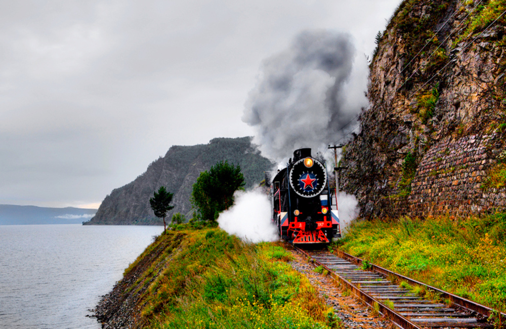
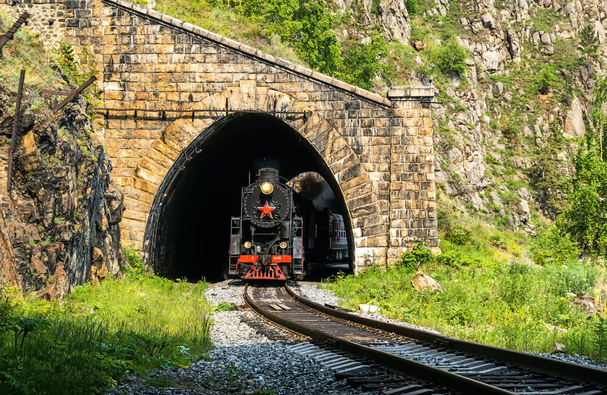
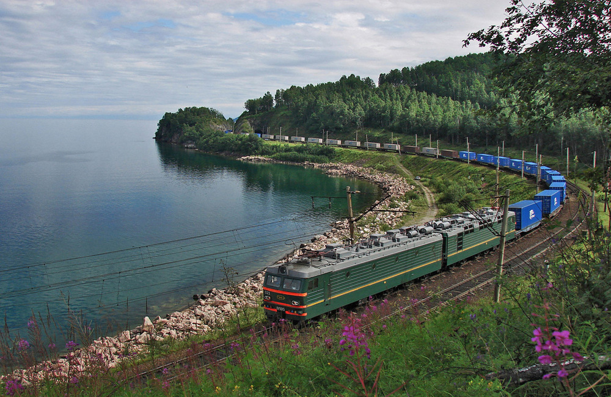
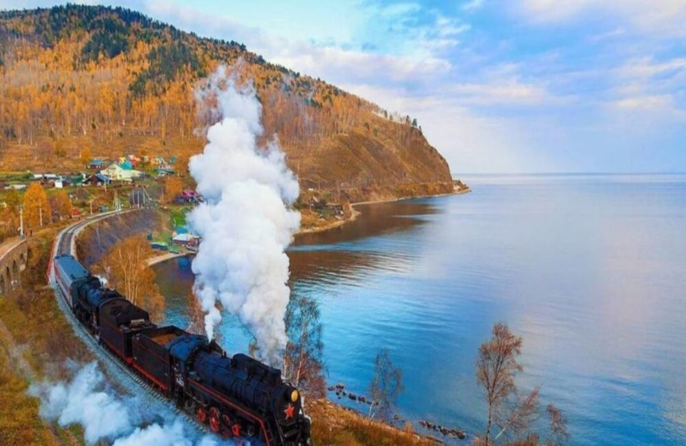
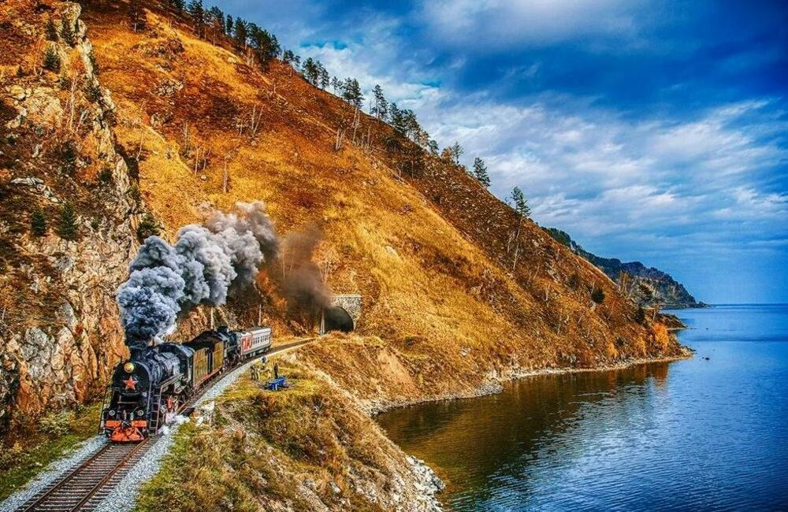

Историческая железная дорога вдоль Байкала с туннелями, мостами и уникальными видами





Кругобайкальская железная дорога — это историческая линия вдоль побережья Байкала. Здесь сохранились старинные туннели, мосты и инженерные сооружения XIX века.
1–2 дня
Май – Октябрь
3 000 – 9 000 ₽